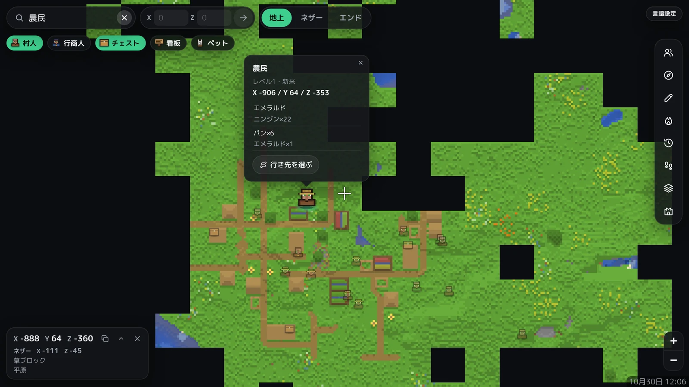

[ 機能 ]
01
地図
1時間ごとに自動で更新されます。過去の日付の地図にさかのぼって見られます。
02
位置
プレイ中のメンバーの位置が、約1分ごとに地図に表示されます。
03
検索
チェストの中身、村人の取引、ペットを検索して、場所を地図で示します。
04
ネザー・エンド
地上だけでなく、ネザーとエンドの地図も見られます。
05
メンバー限定
Microsoft アカウントでログインした、Realm のメンバーだけが見られます。
06
自分のアカウントに保存
地図のデータは、ご自身の Cloudflare アカウントに保存されます。開発者が見たり預かったりすることはありません。
[ 使い方 ]
コピーを作る
GitHub で、Chizuya のコピー(リポジトリ)を作ります。
トークンを登録
Cloudflare のトークンを作り、コピーに登録します。
ログイン
Realm のオーナーの Microsoft アカウントで、1回ログインします。
くわしい手順は、セットアップページに順番に表示されます。
[ 動作環境 ]
| 項目 | 内容 | 備考 |
|---|---|---|
| 対応 | マイクラ統合版の Realm | Java 版には対応していません |
| 料金 | 無料 | GitHub と Cloudflare の無料プランの範囲で動きます |
| 必要なもの | Realm のオーナーのアカウント、GitHub、Cloudflare | アカウントはどれも無料で作れます |
| 使える量 | 地図を開いている時間の合計が1日およそ50時間まで | 例:10人がそれぞれ5時間。こえるとその日は開けず、翌朝9時(日本時間)に戻ります |
| 見られる端末 | パソコン、スマホ、タブレットのブラウザ | アプリのインストールは不要です |
[ よくある質問 ]
Q. 料金はかかりますか?
かかりません。GitHub と Cloudflare の無料プランの範囲で動きます。
Q. Java 版でも使えますか?
使えません。統合版の Realm 専用です。
Q. 地図のデータはどこに保存されますか?
ご自身の Cloudflare アカウントです。作る途中のデータは、暗号化してご自身の GitHub に置かれます。開発者のサーバーには保存されません。
Q. Realm のオーナーでなくても使えますか?
使えません。ワールドを取り出せるのはオーナーだけのため、オーナーのアカウントが必要です。
Realm の地図を作るMIT License / オープンソース
セットアップをはじめる →